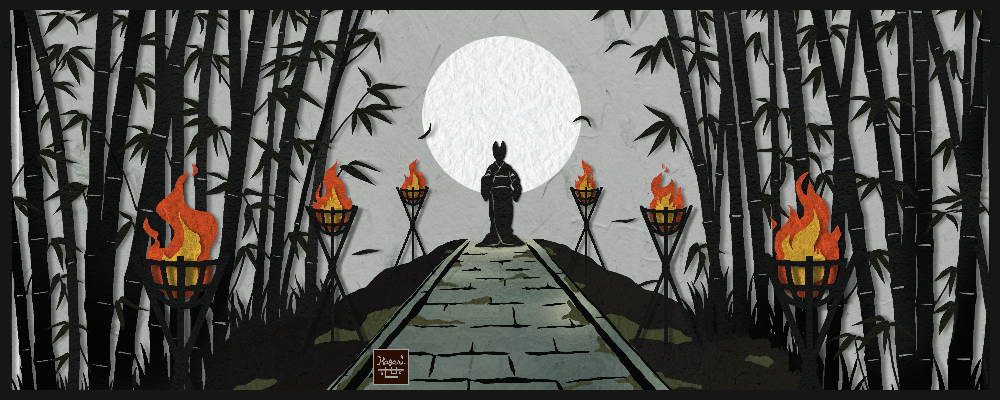
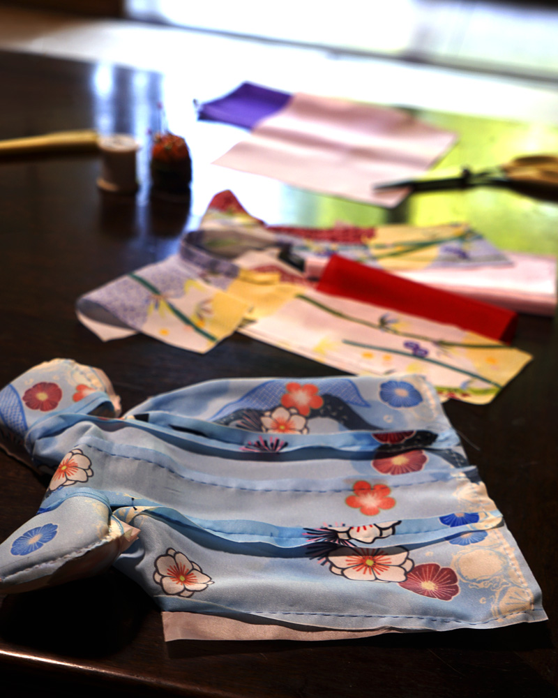
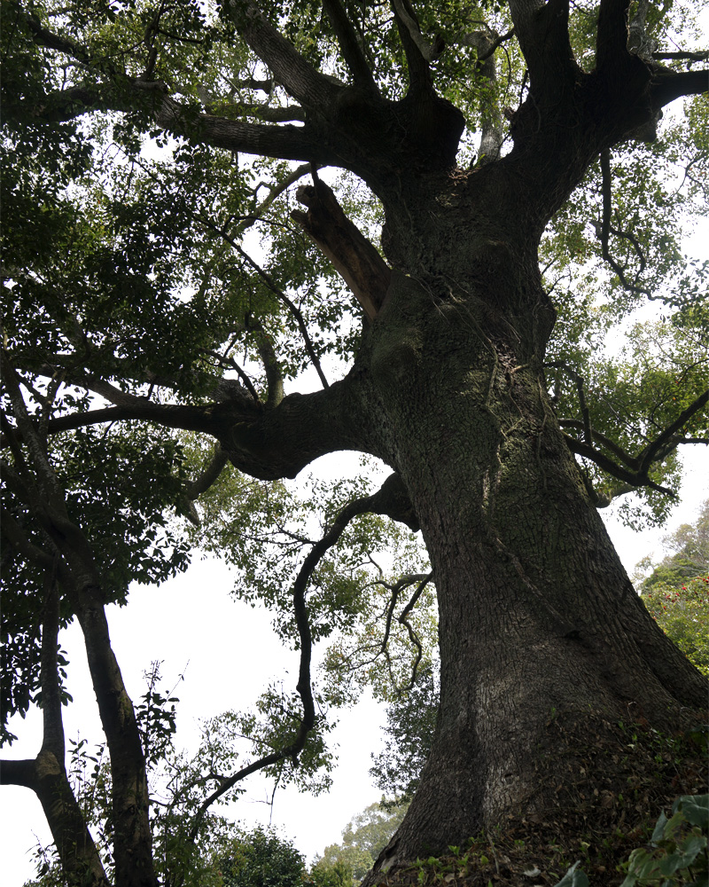
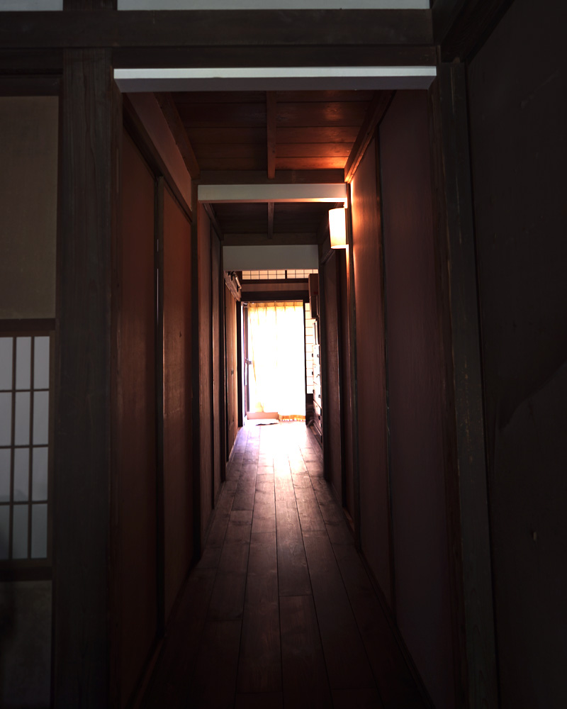
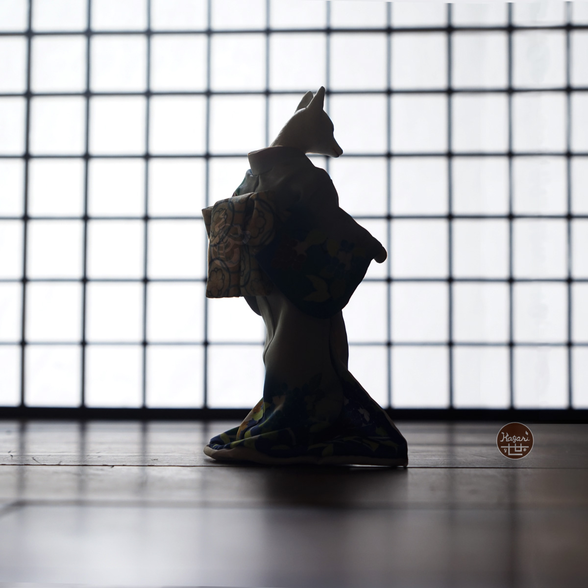
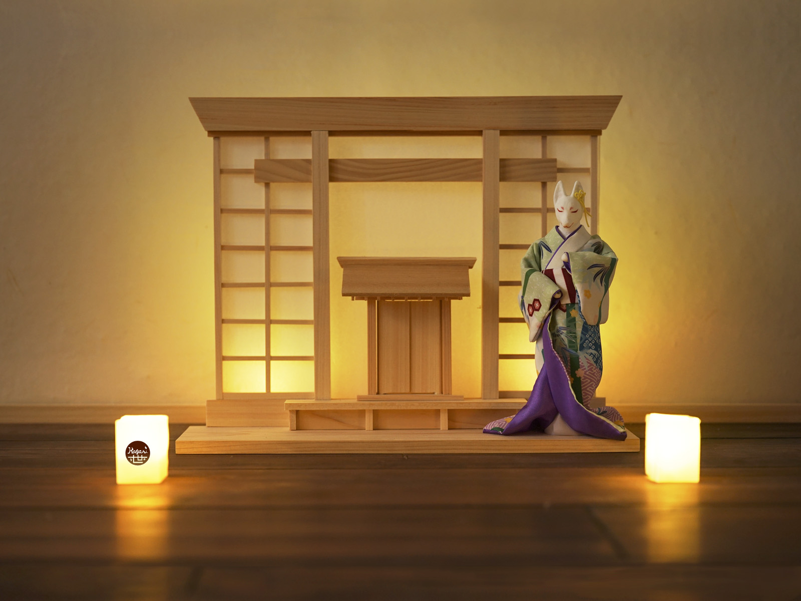

The House of Quiet Things



An old house breathes in silence.
Wood darkened by years.
Cloth resting beneath gentle light.
The soft rhythm of hands at work.
Here,
stories are not spoken.
They are stitched.

The Gentle Guide
A faint ember, born in a digital realm.
Time flowed...
A hazy heat, carrying a scent, wafts through the silent atelier.
A lithe fox in a supple silhouette of kimono.
Standing at the threshold without a word.

The Realm of Signs
Beyond the open shoji, a small gateway invites the gaze.
Where might the path lead?
Here stands a fox of folklore, calm and composed - a gentle guide in the silence. Wrapped in grace, it carries a serene spirit and the quietude of a prayer.
Without a word, it waits.
Perhaps to lead you across the threshold, or perhaps simply to watch over your journey.